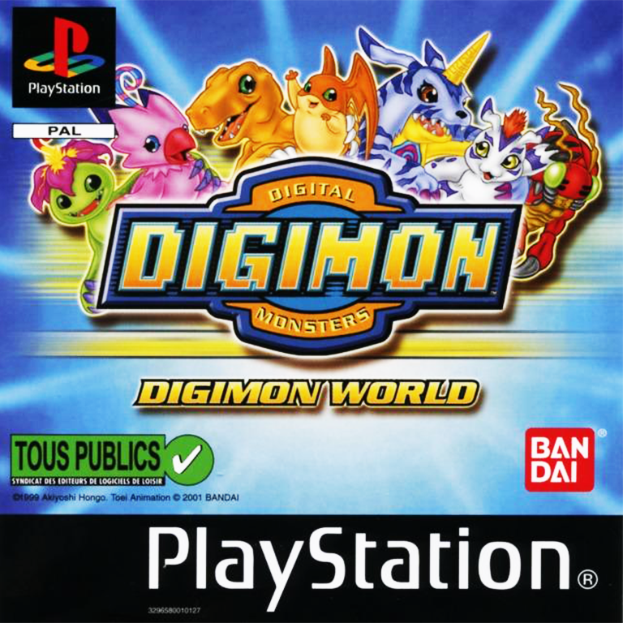

Digimon World
Digimon World is a video game by Bandai on the PlayStation, released in 1999, about the Digimon virtual pets.
First video game on console of the franchise, Digimon world need to introduce the franchise to many, as the original digivice -the digimon virtual pet- never got released in Europe. The intro shows the essentiel we need to know, we see the digivice, hear about digivolution, and see a combat against ultimate digimons.
Once the game begins, an old man talks to us and introduces
himself as the professeur Jijimon, a digimon.
After answering his questions about us, we see our character
-a middle schooler- coming back home to find his own
digivice shining. The digivice absorbs him and next thing we
know we find ourselves in the middle of many monsters : the digimons.
We find again Jijimon that explains that we are in the digiworld, in
File city. File city was a big city full of life and digimons until
the digimons began to forget -one by one- who they were. Our mission :
finding digimons to live in the city. But how? we are only a kid.
The answer lies behind us : our own digimon (agumon or gabumon depending
of our answer to Jijimon)!
At this point you may think :"Yeah, a pokemon like in 3D, nothing special". You are wrong! There are many differences and if somes may seam trivial, they have a huge impact on the manner that you play.
First, there is absolutely no question to "catch them all", we only have one digimon. Isn't a waste to only play one digimon as there as so many in the game ? No, because even though we only have one, it won't live forever ! Exactely, our digimon will die and reincarnate into an egg that will bring to life another kind of digimon. It may die in battle of course, but it may also die of old age!
Second, our digimon digivolve ! Like in pokemon ? Obviously not ! Even if our digimon have stats, there is no actual level. Our digimon may even digivolve into many differents forms. Depending of his age, our digimon will digivolve, and the form it will takes will depends of his stats. The stages of our digimon will be : Baby, In-training, Rookie, Champion and Ultimate.
Let's talk about our digimon. We already know that it has stats, a stage and an age. Well, it also has a name, skills, 3 lives (for death in combat), an happiness meter, a discipline meter and a dirty meter, at least that is what we can see at the beginning. Our digimon will get hungry, sleepy or pressed to go to the toilet (I'm not joking). If we takes care of him, he will be happy, and if we teach him how to behave, his discipline will go up. We can felicite him for behaving well or scold him if he does something bad like shitting in the wild. For training him, we way fight with other digimon but we may also go to the training facility to raise a particular stat (which is important for controling the digivolution).
And the combat system ? It relies on giving orders to our digimon, but as you would expect by now, it's not by selecting the skill to use turn by turn. The fight occurs in realtime, our digimon can utilize up to 4 skills (that we may change anytime) and the orders that with gives to him is only related to his comportement : attack, defense, take some distance, change cible, ... All theses orders will be available depending of the intelligence (stat) of our digimon.
The last main difference is about File city. Our progression is evaluated via the number of digimon that we have brought back : the prosperity of File city. Each digimon depending of his stage will bring us some prosperity but that is not the only thing that they do. Many digimons will work for the city , by opening a shop, an hospital a restaurent,... . Others will upgrade thoses buildings and the rest will only give us advices. Besides all that, we can also go fishing, play curling, exchange objets, fast travel or play the arena.
All theses things together will help you feel concerns about theses digimons and particularly your own companion. This game is much more about travelling and bonding with your digimon than anything else. The story is great, you can advance at you own pace and discover the digiworld the way you want.